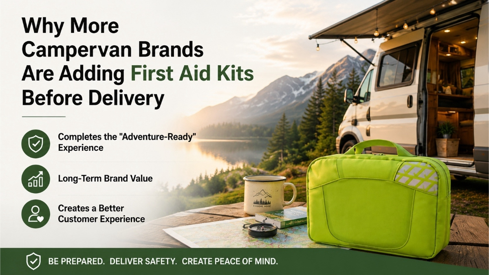

Why More Campervan Brands Are Adding First Aid Kits Before Delivery
AUG 05, 2026

When customers collect a new campervan, they're not simply buying a vehicle.
They're buying freedom, adventure, and the confidence to explore wherever the road leads.
That's why many campervan manufacturers and dealers are paying increasing attention to the delivery experience—not only through vehicle specifications, but also through thoughtful accessories that make customers feel ready for their first trip.
One accessory that's quietly becoming more common is the first aid kit.
It Completes the "Adventure-Ready" Experience
A modern campervan already includes countless practical features—comfortable sleeping areas, storage solutions, heating systems, cooking facilities, and electrical upgrades.
Adding a compact first aid kit sends a simple but powerful message:
"Your adventure starts safely."
Instead of being viewed as a medical product, the kit becomes part of the overall travel experience.
A Small Cost with Long-Term Brand Value
Compared with the value of a campervan, a branded first aid kit represents only a tiny investment.
Yet every time customers open a storage compartment before a trip, they see your brand again.
Unlike brochures or promotional gifts that are often discarded, a quality first aid kit stays inside the vehicle for years.
It continues reminding customers that your company cared about their journey long after delivery day.
More Than a Gift
Some brands include a first aid kit as a delivery gift.
Others offer it as an optional accessory or bundle it into a "Travel Ready Package" together with emergency blankets, warning triangles, flashlights, and other travel essentials.
Both approaches create additional value while helping customers prepare for unexpected situations on the road.
OEM Branding Creates a Better Customer Experience
Private-label first aid kits also help strengthen brand identity.
Instead of receiving a generic medical pouch, customers receive a kit carrying the campervan brand they already trust.
It's another small detail that reinforces professionalism and attention to customer care.
Looking Beyond Compliance
For campervan brands, first aid kits are rarely about regulations.
They're about delivering a complete ownership experience.
As outdoor travel continues to grow, customers increasingly appreciate brands that think beyond the vehicle itself and anticipate real-life travel needs.
Sometimes, the smallest accessory leaves the strongest impression.
Looking to Add First Aid Kits to Your Campervan Line?
At GoSafeMed, we help campervan manufacturers, vehicle converters, and outdoor brands develop compact OEM first aid kits suitable for delivery gifts, accessory programs, and private-label collections.
Whether you're looking for ready-made solutions or custom branding, we'd be happy to discuss your ideas.